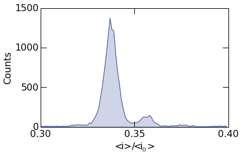
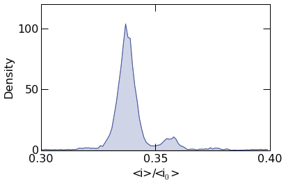
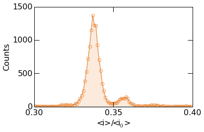
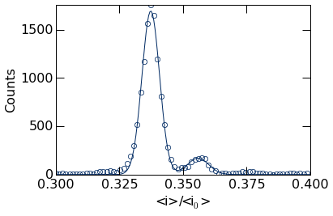

Generate publication quality histogram plots using the
mosaicscripts.plot.histogram module.
:Created: 12/14/2015
:Author: Arvind Balijepalli <arvind.balijepalli@nist.gov>
:License: See LICENSE.TXT
:ChangeLog:
01/09/16 AB Added a plot overlay example.
12/14/15 AB Initial version
import numpy as np
from scipy.optimize import curve_fit
import mosaicscripts.plots.histogram as histogram
from mosaic.utilities.sqlQuery import query
q="select BlockDepth from metadata where ProcessingStatus='normal' and ResTime > 0.25 and BlockDepth between 0.3 and 0.4"
Basic Histogram Plots
Plots are generated using the
mosaicscripts.plots.histogram.histogram_plot() function. See the
histogram module for
additional details.
histogram.histogram_plot(
query("../data/eventMD-P28-bin.sqlite", q),
100,
(0.3, 0.4),
xticks= (0.3,0.35,0.4),
yticks=(0,500,1000,1500),
xlabel=r"<i>/<i$_0$>",
ylabel=r"Counts"
)

To plot the probability density, supply the argument density=True
as shown below.
histogram.histogram_plot(
query("../data/eventMD-P28-bin.sqlite", q),
100,
(0.3, 0.4),
xticks= (0.3,0.35,0.4),
yticks=(0,50,100),
xlabel=r"<i>/<i$_0$>",
ylabel=r"Density",
density=True
)

Custom Styles
The fill transperancy can be controlled with the fill_alpha
argument. When set to 1, it results in a filled plot as seen below.
To turn off filling, simply set fill_alpha=0
histogram.histogram_plot(
query("../data/eventMD-P28-bin.sqlite", q),
100,
(0.3, 0.4),
xticks= (0.3,0.35,0.4),
yticks=(0,500,1000,1500),
xlabel=r"<i>/<i$_0$>",
ylabel=r"Counts",
fill_alpha=1
)

Matplotlib plotting directies can be supplied to histogram_plot()
using the advanced_opts argument. See the Matplotlib plot
documentation
for additional details. In the example below, the plot linewidth is set
to 1.5 points.
histogram.histogram_plot(
query("../data/eventMD-P28-bin.sqlite", q),
100,
(0.3, 0.4),
xticks= (0.3,0.35,0.4),
yticks=(0,500,1000,1500),
xlabel=r"<i>/<i$_0$>",
ylabel=r"Counts",
color='purple',
dpi=600,
fill_alpha=0.15,
advanced_opts={'linewidth': 1.5}
)

The example below shows more advanced styling. Circular markers can be
placed at the center of each bin using the Matplotlib marker
keywords.
Finally, images can be saved by supplying the figname argument as
seen in the example below. Optionally, the figure resolution can be set
with the dpi argument.
histogram.histogram_plot(
query("../data/eventMD-P28-bin.sqlite", q),
100,
(0.3, 0.4),
xticks= (0.3,0.35,0.4),
yticks=(0,500,1000,1500),
figname="histogram.png",
xlabel=r"<i>/<i$_0$>",
ylabel=r"Counts",
color='#EB771A',
dpi=600,
fill_alpha=0.15,
advanced_opts={
'marker': 'o',
'markersize': 6,
'markeredgecolor' : '#EB771A',
'markeredgewidth' : 0.75,
'markerfacecolor': 'none',
'linewidth': 1.
}
)

Advanced Analysis and Plot Overlays
The mosaicscripts.plots.histogram.histogram_plot() function allows
one to overlay additional curves on top of the histogram data. This is
useful, for example, to fit the histogram to a known functional form.
Below we describe, how to fit the histogram data to a sum of two
Gaussians.
First we must define the fit function as shown below. We sum two
Gaussians of the form:
\(a_1 exp(-(x-\mu_1)^2/2\sigma_1^2)+a_2 exp(-(x-\mu_2)^2/2\sigma_2^2)\),
where \(x\) is the independent variable, \(\mu\) is the mean of
the distribution, \(\sigma\) is the standard deviation, \(a\) is
the amplitude and the subscripts denote the peak number.
def gauss_sum_fit(x, a1, mu1, sigma1, a2, mu2, sigma2):
return a1*np.exp(-(x-mu1)**2/(2*sigma1**2)) + a2*np.exp(-(x-mu2)**2/(2*sigma2**2))
Next, we call the histogram_plot function as before. Note however
there are two additional options we must provide to enable us to add the
peak fits to the plot. The first is show=False, which suppresses
plotting the histogram to allow additional plots to be added to the
figure (see the Matplotlib
documentation
for details), and the second is return_histogram=True, which returns
the raw histogram data that we fit to.
Next, we perform the least squares fit using the Scipy
curve_fit
function. The optimized parameters and covariance are stored in popt
and pcov respectively.
Finally, we plot the fit function and call
show()
to display the figure.
hist,bins=histogram.histogram_plot(
query("../data/eventMD-P28-bin.sqlite", q),
75,
(0.3, 0.4),
xticks= (0.3,0.325,0.35,0.375,0.4),
yticks=(0,500,1000,1500),
figname="histogram.png",
xlabel=r"<i>/<i$_0$>",
ylabel=r"Counts",
fill_alpha=0.,
show=False,
return_histogram=True,
advanced_opts={
'marker': 'o',
'markersize': 6,
'markeredgecolor' : '#002A63',
'markeredgewidth' : 0.75,
'markerfacecolor': 'none',
'linewidth': 0.
}
)
popt,pcov=curve_fit(gauss_sum_fit, bins, hist, [1200, 0.34,0.003, 100, 0.36,0.003])
xdat=np.arange(0.3, 0.4,0.0005)
ydat=gauss_sum_fit(xdat, *popt)
histogram.plt.plot(xdat, ydat, color="#002A63")
histogram.plt.show()

The popt variable holds the optimized fit parameters, stored in the
order defined by the gauss_sum_fit above. We can extract these
values from this list. For example, the peak positions can be retrieved
as shown below.
(0.33733498827022712, 0.3559240351776794)